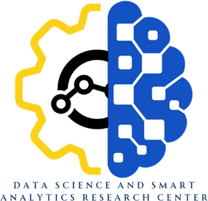

Rizal Technological University · Research Intelligence
Research Intelligence for the SDGs.
An interactive exploration of RTU's Scopus-indexed publications, sustainable development themes, citation visibility, research contributors, and priorities.
Publication export: 2021–2026Scopus data17 UN Sustainable Development GoalsDashboard-assigned SDG mapping

Facilitated by
Data Science and Smart Analytics Research Center
This interactive dashboard was facilitated by the Data Science and Smart Analytics Research Center.
Loading research data…
University research in numbers
All panels respond to the filters above. Papers assigned to multiple SDGs count once in university totals.
Research intelligence · November 2026 dashboard
Annual research output
Use the bars to filter by year.
2026 is a partial publication year in the uploaded export; the exact CSV extraction date was not provided.
SDG research leaders
Ranked by the number of topically aligned papers.
Multi-label assignments mean SDG counts are not additive.
Open science profile
What the portfolio suggests
Research portfolio, global partnerships & funding
Historical reporting figures from the October 2026 presentation, shown separately from the filterable Scopus data above. Select a bar to inspect its value.
2019–October 2026 reporting figures
Share of publications (%)
Six research themes in the university portfolio.
Share of citations (%)
Citation shares by the same six research themes.
Co-authors from 36 countries
Countries with the most co-authored RTU publications (Philippines excluded). Select a column to see the count.
The chart highlights 12 of the 36 collaborating countries, as reported in the presentation.
Trusted partners at home and abroad
Co-authored publications with selected institutions.
A publication may involve more than one institution.
Funders acknowledged (publications)
Research outputs acknowledging university, national and international support.
A publication may acknowledge more than one funder. “Other funders” is the combined category in the presentation.
The 17 SDGs: RTU research atlas
Choose a goal to explore its publications. A blank goal is not proof of no university contribution—it means no paper in this export was assigned to it by this dashboard mapping.
SDG publication coverage
Number of publications aligned to each goal.
SDG relevance and interpretation
SDG × publication year matrix
Click a cell to apply both the SDG and year filters. Counts refer to individual papers within each cell.
Color intensity is normalized separately for each SDG row to help reveal its annual pattern.
Productivity, visibility, and public access
A descriptive look at SDG-linked output, citations, and publication format. Citation comparisons do not establish impact causality.
Output by year
Citations by publication year
Citation counts are citations earned by papers published in each year, not citations received during that calendar year.
Average citations per SDG-aligned paper
Each goal's own matched papers; papers can appear in more than one goal.
Document format
Citations are not field- or age-normalized; older papers have longer to accumulate citations.
Most-cited publications in this selection
Research publication explorer
Browse the uploaded Scopus export. Click SDG badges or year bars in other sections to cross-filter this list.
The dashboard publishes publication-level Scopus data, not full Scopus abstracts, for a lightweight GitHub Pages deployment. DOI links lead to publisher records where supplied.
Researcher explorer
Based on the separate uploaded Scopus Author Details export. Author-document counts come from that file and are not guaranteed to equal this publication CSV's counts.
Researcher roster
113Scopus author IDs in roster
—Roster IDs linked to this publication CSV
The author roster is not independently verified as a list of distinct RTU employees. The presentation's 105 RTU researchers is a different, narrower reporting measure.
Explore by researcher
Selecting an author filters publications across the dashboard.
Scopus researcher directory
Author records with invalid IDs and the export's copyright footer were excluded. Click “View papers” for matched author IDs.
Research roadmap and transparency
How to interpret the SDG dashboard, its source limitations, and the aspirational targets contained in the PowerPoint.
Two different Scopus snapshots
Interactive CSV dataset
109 papers
2021–2026 · 370 citations
113 valid rows in the separate author roster
October 2026 presentation
110 papers
2019–6 October 2026 · 315 citations
105 RTU-affiliated researchers reported
These counts cannot be treated as identical or averaged together. The CSV omits 2019–2020 and differs in its later-year coverage and citation totals. Differences may reflect timing, selection criteria, affiliation filtering, or record revisions; their exact causes have not been verified.
SDG mapping protocol
1. Publication-level evidence
Use the uploaded titles, with selective abstract checks, to infer direct or plausible thematic relevance to a UN SDG.
2. Conservative, multi-label decisions
Assign zero, one, or several relevant SDGs. A fundamental astronomy paper is not automatically labeled SDG 9 merely because it uses technology.
3. Explicit-versus-assigned labeling
Research directly naming SDG 4, 6, or 11 is flagged as explicit in the records; other assigned goals are dashboard classifications based on the available Scopus data.
4. Validate before policy reporting
For official SDG performance monitoring, reconcile the records and manually review every classification before external reporting.
Suggested 2029 research targets from the presentation
These are suggestions recorded in slide 28 of the presentation, not forecasts generated by the dashboard.
Priority decisions to consider
01
Verify thematic coverageReview unassigned publications and manually validate multi-SDG classifications using full records.
02
Broaden the impact evidenceIncorporate richer citation evidence, SDG 4/11 case studies, and policy/practice uptake when available.
03
Improve data stewardshipStandardize affiliations, unique Scopus EIDs, extraction dates, and documented tagging rules.
04
Audit portfolio gapsReview whether goals with zero papers represent real priorities or limitations of classification or database coverage.
Source and use notes
Source files: RTU Scopus Publications 2019-2026.csv; RTU Scopus Authors.csv; RTU.SUA.ScopusReport (1)(1).pptx. Data are supplied by the user. No automatic live Scopus updates occur.
Publication years represented in the CSV are 2021 through 2026. 2026 is partial. Citation counts and OA flags are as recorded in the uploaded export; no external reconciliation has been made.
The dashboard is client-side and uses no accounts, analytics trackers, databases, cookies, or API keys. SDG tags can be revised in build_data.py and regenerated locally. The site can be published on any GitHub Pages static host.
SDG tags are research-topic classifications, not measurements of SDG target attainment, policy impact, causal effect, or alignment certified by the United Nations.